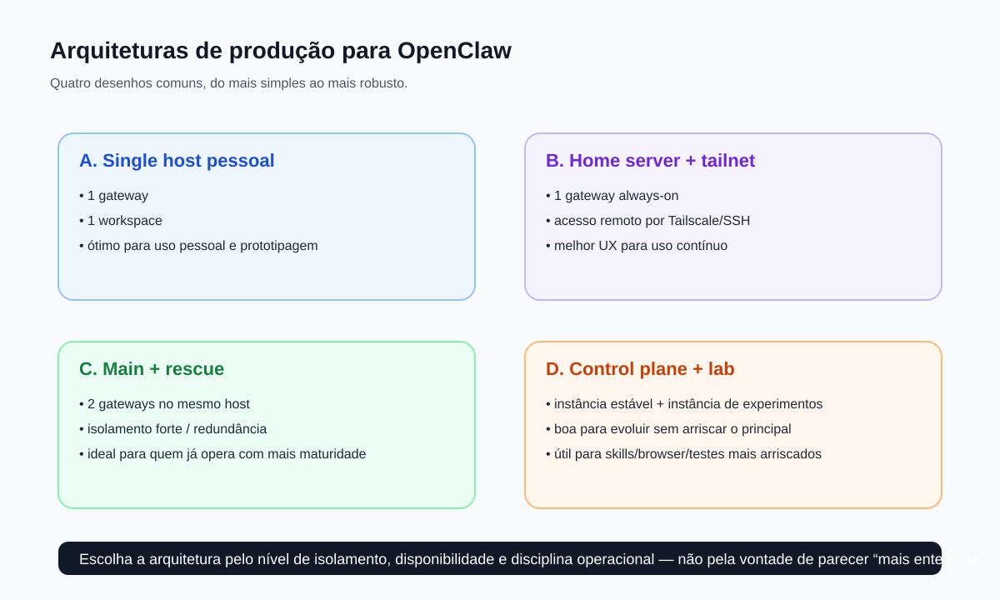

Arquitetura boa de produção é a que cabe no seu nível de maturidade operacional. O desenho certo não é o mais sofisticado — é o mais claro, auditável e sustentável para o que você precisa hoje.
Arquiteturas de produção para OpenClaw
"Produção" para OpenClaw não significa necessariamente um cluster gigante. Na prática, produção quer dizer um sistema que precisa continuar funcionando, ser entendível, e permitir recuperação quando algo der errado. Este capítulo organiza quatro padrões úteis e mostra como escolher entre eles sem cair em overengineering.
Diagrama — Arquiteturas comuns

Padrão A — Single host pessoal
Um único gateway em uma máquina que você controla, com um workspace principal e operação centrada ali. É o melhor desenho para começar.
- Prós: simplicidade, baixo custo cognitivo, menos moving parts.
- Contras: dependência forte daquela máquina, menos isolamento.
- Ideal para: uso pessoal, prototipagem, fase inicial.
Padrão B — Home server + tailnet
Um gateway always-on rodando em desktop, mini-PC, Pi ou VPS, com acesso remoto via SSH/Tailscale. É provavelmente o melhor desenho "sério" para a maioria das pessoas.
- Prós: disponibilidade melhor, UX consistente, acesso remoto mais limpo.
- Contras: exige mais disciplina de host e rede.
- Ideal para: quem quer o agente sempre disponível.
Padrão C — Main + rescue
Duas instâncias no mesmo host ou em hosts diferentes: uma principal e uma rescue. É um desenho de redundância operacional leve.
- Prós: recuperação melhor, isolamento forte.
- Contras: mais complexidade e mais coisa para manter coerente.
- Ideal para: quem já depende bastante do sistema.
Padrão D — Stable control plane + lab
Uma instância conservadora para operação real e outra para testes, skills arriscadas, browser, novas integrações e experimentos.
- Prós: ótimo equilíbrio entre estabilidade e evolução.
- Contras: exige disciplina para não confundir o que é "lab" com "prod".
- Ideal para: quem evolui o sistema com frequência.
Como escolher
Princípios transversais de produção
- Loopback por padrão. Expor menos é melhor.
- Tailscale/SSH antes de exposição pública.
- Observabilidade cedo. Logs, health, status e troubleshooting ajudam muito antes do desastre.
- Rollback simples. Arquitetura boa permite voltar atrás sem ritual.
- Isolamento claro. Config, state, workspace, credenciais e risco precisam de fronteiras.
Checklist de produção mínima
- gateway supervisionado (daemon/service)
- status/health entendidos e testados
- backup/controle do workspace
- acesso remoto seguro (SSH/Tailscale)
- plano de recuperação escrito
O que eu recomendaria na prática
Para a maioria dos usuários, a progressão saudável é:
Single host pessoal → Home server + tailnet → Main + rescue (se necessário) → Stable + lab (quando a evolução fica constante)Isso evita pular cedo para uma complexidade que você ainda não precisa operar.